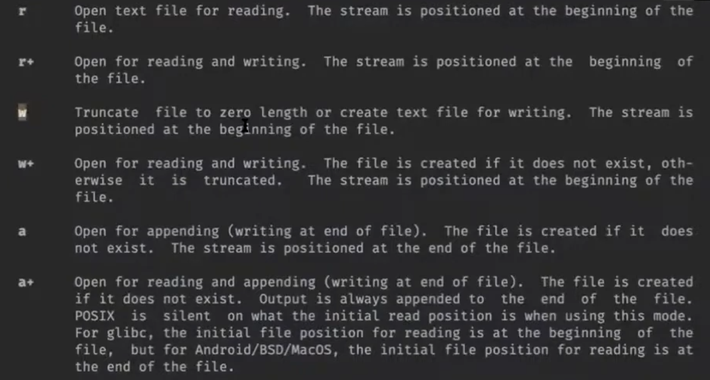

Операционная система
ПО, которое организует доступ к ресурсам компьютера:
- унифицирует (драйверы, файловая система, ...);
- разделяет (вытесняющая многозадачность, виртуальная память, ...);
- разграничивает (права доступа для пользователей, ...).
Чтобы ОС могла выполнять свои функции, нужна поддержка со стороны процессора: привилегированный режим, в котором будет исполняться часть ОС, называемая ядром (kernel).
Прикладные программы
Системные утилиты
Userspace
────────────────────────────────────────────────────────
Kernelspace
Ядро ОС (привилегированный
режим)
Переносимость и совместимость
API (application programming interface) — контракт на уровне исходного кода (source-level).
Пример — API стандартной библиотеки языка Си.
ABI (application binary interface) — контракт на уровне машинного кода и двоичного представления данных: соглашения о вызовах, способы компоновки, порядок загрузки и запуска программы, интерфейс взаимодействия с ядром ОС. Нас будет особенно интересовать ABI Linux/x86.
Семейство юниксовых
Картинка из Википедии:

В 70-х Кен Tомпсон и Деннис Ричи разработали ОС Research UNIX. В 80-е AT&T ее коммерциализировала. В это же время Ричард Столлман придумал проект GNU, для него не хватало ядра. В 90-е Линус Торвальс начал разрабатывать Linux, проект GNU его подхватил. Теперь мы пользуемся ОС GNU/Linux, название означает OC GNU и ядро Linux.
Все это развивалось в разных направлениях, переносить программы между разными юниксами было тяжело, были попытки обеспечить переносимость программ между разными юниксами.
В 1985 году компания AT&T специфицировала UNIX System V в документе System V Interface Definition (SVID).
В 1988 рабочая группа IEEE выпустила первый стандарт POSIX (portable operating system interface), который стандартизировал, что такое UNIX.
xkcd: How standards proliferate
1994, X/Open: Single UNIX Specification (SUS).
Системные вызовы на Linux/x86
Осуществляются (пока что магической) инструкцией int $0x80.
В регистре eax должен быть номер системного вызова,
а в регистрах ebx, ecx и edx — его аргументы по порядку.
Результат системного вызова возвращается в регистре eax.
Напишем программу bare.S, которая делает системный вызов exit,
не пользуясь стандартной библиотекой языка Си:
#include <sys/syscall.h>
.global _start
_start: // default ELF entry point
mov $SYS_exit, %eax // SYS_exit == 1
mov $42, %ebx // exit(int status) ← status = 42
int $0x80
Соберём её:
gcc -m32 -static -nostdlib bare.S -o bare
То же самое в виде программы на языке Си:
#include <sys/syscall.h>
void _start() {
asm volatile ("int $0x80" : : "a"(SYS_exit), "b"(42));
}
Системные вызовы документированы в секции 2 руководства
(manual), поэтому почитать документацию на системный вызов
exit можно так: man 2 exit.
Файлы
Главная сущность, которую мы будем изучать - файлы, поскольку в unix-подобных системах почти все ресурсы представлены именно через эту абстракцию.
Файл — последовательность байт, к которой ОС предоставляет доступ посредством файловых операций.
Например:
- файл на диске;
- вывод программы;
- пользовательский ввод;
- бесконечная последовательность случайных байт;
- всё содержимое диска;
- ...
───────────────────────────
... Mary had a little lamb, its ...
───────────────────────────
▲
│ file position
read(1) → "a"
read(5) → "d a l"
read(5) → "ittle"
write(5, " wolf")
───────────────────────────
... Mary had a little wolf, its ...
───────────────────────────
▲
│
lseek(-3, SEEK_CUR) // move file position 3 bytes to the left
───────────────────────────
... Mary had a little wolf, its ...
───────────────────────────
▲
│
Заметим, что системные вызовы write/read/lseek могут не иметь смысла при работе с конкретным файлом. Например, в файл “пользовательский ввод” нельзя ничего записать или подвинуть позицию чтения/записи.
Конец файла (EOF):
─────────────────────────┐
... il sole e l'altre stelle.│
─────────────────────────┘
▲
│
read(10) → "stelle."
read(10) → ""
write(5, " FIN.")
──────────────────────────────┐
... il sole e l'altre stelle. FIN.│
──────────────────────────────┘
▲
│
Q. А как пользователь понимает, где EOF?
A. EOF - ситуация, она нигде. EOF (end of file) - это не специальный символ, а ситуация, когда после запроса на считывание байтов считывается 0 байт.
Файловые дескрипторы
Операции для работы с файлами - это системные вызовы, то есть обращения к ядру. Чтобы объяснить ядру, c каким из файлов мы хотим работать, нужны идентификаторы. В качестве идентификаторов выступают файловые дескрипторы — целые числа.
char buf[10];
int fd = 3;
read(fd, buf, sizeof(buf));
Userspace
──────────────────────────────────────────
Kernelspace
0 → keyboard
1 → display
2 → display
3 → somefile.txt
- 0 (
STDIN_FILENO) — standard input - 1 (
STDOUT_FILENO) — standard output - 2 (
STDERR_FILENO) — standard error output
Q. Для разных процессов разные дескрипторы?
A. Да, у каждого процесса есть собственная таблица файловых дескрипторов.
POSIX file API
Системные вызовы read и write
#include <unistd.h>
ssize_t read(int fd, void *buf, size_t count); // ssize_t - знаковый size_t, нужен, чтобы помещалось значение -1
ssize_t write(int fd, const void *buf, size_t count);
- если считывание прошло успешно, read возвращает количество считанных байт (0, если достигли конца файла)
- если произошла ошибка, read возвращает -1, а также выставляет специальную переменную
errno. Вerrnoхранится номер последней произошедшей при системных вызовах ошибки
Напишем программу mycat, которая будет читать байты со стандартного входа и писать их на стандартный выход с помощью системных вызовов.
#include <unistd.h>
int main() {
char c; // наш буфер в один байт
while (read(STDIN_FILENO, &c, sizeof(c)) > 0) { // STFIN_FILENO = 0
write(STDOUT_FILENO, &c, sizeof(c)); // STDOUT_FILENO = 1
}
}
Чтобы сделать конец файла, нажмем ctrl + d. Так драйвер терминала порождает конец файла.
Q. Получается, ядро считывает ввод до \n?
A. Да. Это можно поменять с помощью драйвера терминала.
Команда strace показывает, какие системные вызовы совершает наша программа. Использовать вот так: strace ./mycat
Наш буфер сейчас 1 байт. Если файл очень большой, то программа будет работать долго, поскольку каждый системный вызов занимает некоторое время. Давайте увеличим буфер, в который читаем файл.
Q. Не получится ли плохая ситуация, когда в файле осталось читать только 100 байт, а мы просим 200?
A. Нет, когда мы просим считать больше байтов, чем осталось на чтение в файле, read считывает, сколько есть.
Системный вызов open
int open(const char *pathname, int flags);
int open(const char *pathname, int flags, mode_t mode);
- Если файл удалось открыть,
openвозвращает файловый дескриптор - Если не удалось,
openвернет -1, а также выставит номер ошибки в errno
Заметим, что приведены две функции open с разными сигнатурами. Язык С так не умеет, на самом деле функция open принимает произвольное количество параметров.
Напишем программу, которая умеет работать с аргументами командной строки
#include <unistd.h>
#include <sys/types.h>
#include <sys/stat.h>
#include <fcntl.h>
#include <stdio.h>
#include <stdlib.h>
void catfile(int sourcefd) {
char buf[10000];
ssize_t result;
while ((result = read(sourcefd, buf, sizeof(buf))) > 0) {
write(STDOUT_FILENO, buf, result);
}
}
int main(int argc, char *argv[]) {
if (argc == 1) {
catfile(STDIN_FILENO);
} else {
for (int f = 1; f < argc; ++f) {
int fd = open(argv[f], O_RDONLY); // в argv[f] путь к файлу
if (fd < 0) {
perror("error opening file"); // print error, лежит в <stdio.h>. принимает строку, печтает ее и сообщение об ошибке, исходя из errno
return EXIT_FAILURE; // EXIT_FAILURE = 1
}
catfile(fd);
close(fd); // всего 1024 доступных файловых дескрипторов, хочется избежать, чтобы при каждом open давали новый файловый дескриптор
}
}
}
Q. Функция
_startтоже принимает на вход аргументы командной строки?A. Да, но в стеке.
Флаги
- Режима доступа к файлу: O_RDONLY, O_WRONLY и O_RDWR
- O_TRUNC обрезает файл, при открытии он получит размер 0
- O_CREAT создаст файл, если его нет
- O_APPEND установит файловую позицию чтения/записи на конец файла
Системный вызов lseek
off_t lseek(int fd, off_t offset, int whence);
offset - на сколько байт перемотать относительно точки отсчета
whence - точка отсчета:
SEEK_SET- с начала файлаSEEK_CUR- с текущей позицииSEEK_END- с конца файла
Напишем программу, которая перематывает файл на заданную позицию и там что-то записывает.
#include <unistd.h>
#include <fcntl.h>
#include <stdio.h>
#include <stdlib.h>
#include <string.h>
const char usage[] = "Usage: binpatch FILE OFFSET DATA\n";
int main(int argc, char *argv[]) {
if (argc != 4) {
write(STDERR_FILENO, usage, strlen(usage));
return EXIT_FAILURE;
}
const char *name = argv[1];
int offset = atoi(argv[2]);
const char *data = argv[3];
int fd = open(name, O_WRONLY | O_CREAT, S_IWUSR | S_IRUSR); // если передать название несуществующего файла, то благодаря O_CREAT он будет создан
if (fd < 0) {
perror(name);
return EXIT_FAILURE;
}
if (lseek(fd, offset, SEEK_SET) < 0) {
perror("seek");
return EXIT_FAILURE;
}
if (write(fd, data, strlen(data)) < 0) {
perror("write");
return EXIT_FAILURE;
}
off_t position = lseek(fd, 0, SEEK_CUR); // lseek возвращает смещение от начала записи после исполнения
ftruncate(fd, position); // обрезает файл
// можно не закрывать файл, поскольку мы выходим из программы, и ОС подчистит все наши файловые дескрипторы
}
- Если в пустом файле сдвинуть позицию на 5 байт и записать туда 3 байта, то размер файла станет 8, первые 5 байт заполнятся нулями
/dev/stdinдля каждого процесса показывает его стандартный вход, в этом файле нельзя переставить позиции чтения и записи. Если передать этот файл в нашу программу, словим ошибку ESPIPE (illegal seek).
Переносимость в языке си
Если мы хотим, чтобы наши программы были переносимы, то пользоваться вызовами, которые стандартизированы POSIX, нельзя. Поэтому язык С предоставляет стандартизированные способы работы с файлами.
#include <stdio.h>
FILE *fopen(const char *pathname, const char *mode);
- при успехе возвращает указатель на структуру FILE
- при ошибке возвращает NULL и выставляет номер ошибки в errno
Заметим, что mode передаем как символьную строку, она может принимать следующие значения:

Перенос строки \n в UNIX-подобных ОС - это символ с кодом 10, а на Windows перевод строки - это символы CR и LF (коды 13 и 10). Ради переносимости язык C работает с текстовым файлами так, чтобы \n превращался в тот символ переноса, что нужен на конкретной платформе. Эту опцию можно отключить, добавив в конце mode букву b.
// другие функции библиотеки С для работы с файлами
int fclose(FILE *stream);
int fprintf(FILE *stream, const char *format, ...);
int fseek(FILE *stream, long offset, int whence);
Стандартная библиотека языка С создает потоки ввода/вывода буферизованными: данные накапливаются в буфере, пока он не заполнится. Только тогда данные передаются в системный вызов write.
#include <stdio.h>
#include <unistd.h>
int main() {
FILE *f = fopen("poem. txt", "w");
fprintf(f, "some string");
fprintf(f, " and some other string\n");
pause();
fclose(f);
}
Если во время выполнения pause убить программу, то в файл poem.txt ничего не запишется. Чтобы принудительно очистить буфер, нужно написать fflush(f) перед pause. Если убрать pause и не закрывать файл, то данные все равно окажутся на диске, т.к. когда завершается main, стандартная библиотека языка С вызывает функцию exit, которая закрывает все потоки ввода и вывода, очищая их буферы.
Но нам не всегда хочется при завершении программы закрывать потоки, поэтому можно самим вызвать системный вызов exit:
syscall(SYS_exit, EXIT_SUCCESS);
void _exit(int status); // функция в POSIX. завершает программу, но не сбрасывает буфер
void _Exit(int status); // аналогичная функция в стандартной библиотеке си
Бывают потоки, буферизованные построчно. Например, стандартные потоки ввода/вывода. При встрече \n они сбрасывают буфер. stderr, напротив, не буферизован, благодаря этому сообщения об ошибках появляются сразу.
void setbuf(FILE *stream, char *buf); // для управления буферизацией
void setlinebuf(FILE *stream); // для строчной буферизации